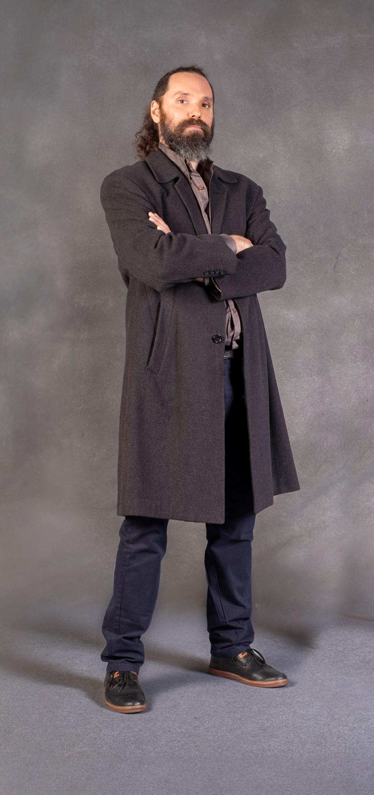

RODRIGO NOYA
CV
Rodrigo José Noya
12/11/1981, Avellaneda, Argentina.
Artista audiovisual, músico y docente. Diseñador de Imagen y Sonido (UBA), con formación complementaria en programación y dibujo. Actualmente curso la Maestría en Artes Electrónicas (UNTREF). Desarrollo obras en video, música, documental, vj sets, animación generativa y sitios web.
En 2023 presenté la serie documental El piano y el tango, con apoyo de Mecenazgo y el FNA (elpianoyeltango.com.ar). Actualmente trabajo en el documental Casa sin gente, con apoyo del INCAA y Mecenazgo, centrado en las construcciones de la Compañía Ítalo Argentina de Electricidad.
Mi obra ha sido presentada en festivales de América, Europa y Asia, entre ellos: BIM, Oberhausen, BAFICI, PLAY, FIVA, IVAHM, Festifreak, ADAF y Escalatrónica.
Más info: llenodenada.com.ar
